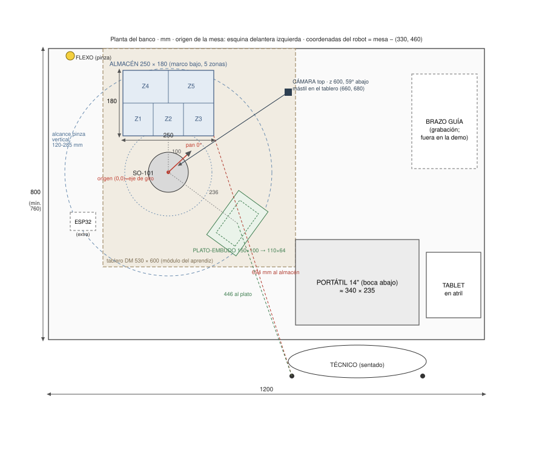

«Mientras reparo el portátil, mi aprendiz me trae lo que nombro desde el fondo del banco. Aprendió mirándome, y cuando falla le corrijo.»
«Sí» o «no» al concepto antes de imprimir nada. Si es «sí»: quién va el jueves a las tiendas de reparación, quién escribe a la organización, y confirmar el nombre «Aprendiz · Ikastuna» y la impresora de Andoni.
Quien reacondiciona portátiles trabaja con las manos dentro del equipo. Su aprendiz es un SO-101 que le deja junto a la mano lo que nombra, sacándolo de un almacén al fondo del banco al que el técnico solo llega estirándose por encima del portátil y del brazo. Una sola red (SmolVLA) recibe la frase y dos cámaras, y según la frase coge un objeto u otro, puestos donde el jurado quiera.

Un portátil abierto con dos manos dentro; detrás, un brazo que coge una caja del fondo y la deja en un plato junto a esas manos. Cartel: «Lo nombro. Me lo trae.»
MSN alumbraba donde el soldador señalaba. Aquí no hay luz, ni soldador, ni placa: un brazo que coge por su nombre cosas distintas y un portátil que al final arranca.
| Criterio | Estado | Por qué |
|---|---|---|
| U1 Valor real | sin resolver | Ningún técnico ha escrito que este gesto le ayude. Lo deciden la cita del jueves y la medida con y sin robot |
| U2 Necesita VLA | dudoso | Sí si la matriz del sábado demuestra que la red lee la frase; en la rama B, no |
| U3 Bajo fallo | dudoso | El gesto más fiable del SO-101 e intentos independientes, pero nada probado |
| U4 Herramienta real | a medias | Portátil y operación reales; vaso, plato y almacén son útiles de banco |
| U5 Colaboración | dudoso | En los 5 intentos puntuados nadie repara; la colaboración se ve en el vídeo y en la medida |
| U6 Hobby o industria | sí | Banco de reacondicionado y reparación |
| U7 Se vende ya | sin resolver | Analogía con kits y pedidos (Ultra, Tutor), que se hacen en almacén, no en un banco |
Tarea declarada: el jurado coloca el vaso y la caja donde quiera dentro del almacén, con el brazo aparcado, y elige uno; el aprendiz lo deja en el plato en menos de 25 s, sin que nadie toque el robot. Cinco intentos independientes.
Órdenes: Bring the screw cup. · Bring the memory box.
| Tiempo | Qué pasa |
|---|---|
| 0:00-0:30 | Persona y problema: foto del banco del técnico entrevistado y su frase [jue.] |
| 0:30-0:40 | La tarea que declaramos |
| 0:40-3:40 | Cinco intentos (~36 s cada uno). El narrador cuenta los datos mientras el brazo se mueve |
| 3:40-4:10 | Cuaderno del aprendiz: un fallo y el mismo caso corregido |
| 4:10-4:35 | El portátil arranca con la memoria nueva |
| 4:35-5:00 | «X de 5 sin ayuda; un aprendiz que se enseña y no se reprograma» |
Estimación por intento [est., ± 0,15]: vaso 0,80, caja 0,75 → 5/5 en torno al 24-33 %. Se planifica para 4 de 5. Hay versión de 90 s y vídeo de 1 minuto con la reparación completa.
| Tanda | Cuándo | Orden | Episodios |
|---|---|---|---|
| 1 | Vie. 19:00-21:00 | vaso | 30 |
| 2 | Vie. 21:00-22:45 (si hay noche abierta) | caja | 30 |
| 3 | Sáb. 10:30-12:00 | vaso + caja | 40 |
| 4 | Sáb. 14:00-15:30 | desde donde falló | 20-40 |
≥ 8/10 en la prueba del sábado a las 9:30. Una sola red, dos órdenes, la matriz y la caja nunca vista.
La red ignora la frase, o casos intermedios. Un ACT (o el modelo que mejor midió) por orden; el puente carga el que toca y la tabla dice por qué.
Pocos episodios, nada se mueve a las 14:00 del sábado o un objeto no llega a 5/10. Solo el que mejor sale. «Primera semana del aprendiz: sabe una cosa.»
Ninguna serie supera 1/5. Vídeo del mejor intento, cuaderno de fallos y la medida con y sin robot.
grabar.py con la lista de posicionespuente.py: rollout interactivo y botonesProceso: directrices destiladas → 5 generadores (13 conceptos) → 2 evaluadores estrictos y jurado simulado → 2 finalistas → consejo de 4 voces → equipo rojo → 3 especialistas → cinco rondas de revisión santa-method con 2 revisores cada una. Documentos en .plans/brief/; el Brief completo en BRIEF-aprendiz.md.